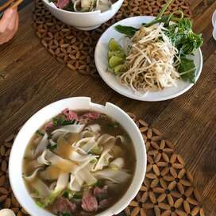

Pho

Description
This authentic pho isn't quick, but it is delicious.
The key is in the broth, which gets simmered for at least 6 hours.
Ingredients
- 4 pounds beef soup bones
- 1 onion, unpeeled and cut in half
- 5 slices fresh ginger
- 1 tablespoon salt
- 2 pods star anise
- 2.5 tablespoons fish sauce
- 4 quarts water
- 1 (8 ounce) package dried rice noodles
- 1.5 pounds beef top sirloin, thinly sliced
- 0.5 cup chopped cilantro
- 1 tablespoon chopped green onion
- 1.5 cups bean sprouts
- 1 bunch Thai basil
- 1 lime, cut into 4 wedges
- 0.25 cup hoisin sauce (Optional)
- 0.25 cup chile-garlic sauce (such as Sriracha) (Optional)
Steps
Step 1
- Preheat oven to 425 degrees F (220 degrees C).
Step 2
- Place beef bones on a baking sheet and roast in the preheated oven until browned, about 1 hour.
Step 3
- Place onion on a baking sheet and roast in the preheated oven until blackened and soft, about 45 minutes.
Step 4
- Place bones, onion, ginger, salt, star anise, and fish sauce in a
large stockpot and cover with 4 quarts of water. Bring to a boil and
reduce heat to low. Simmer on low for 6 to 10 hours.
Strain the broth into a saucepan and set aside.
Step 5
- Place rice noodles in large bowl filled with room temperature water
and allow to soak for 1 hour. Bring a large pot of water to a boil
and after the noodles have soaked, place them in the boiling water
for 1 minute. Bring stock to a simmer.
Step 6
- Divide noodles among 4 serving bowls; top with sirloin, cilantro,
and green onion. Pour hot broth over the top. Stir and let sit until
the beef is partially cooked and no longer pink, 1 to 2 minutes. Serve
with bean sprouts, Thai basil, lime wedges, hoisin sauce, and chile-garlic
sauce on the side.
Return to main page